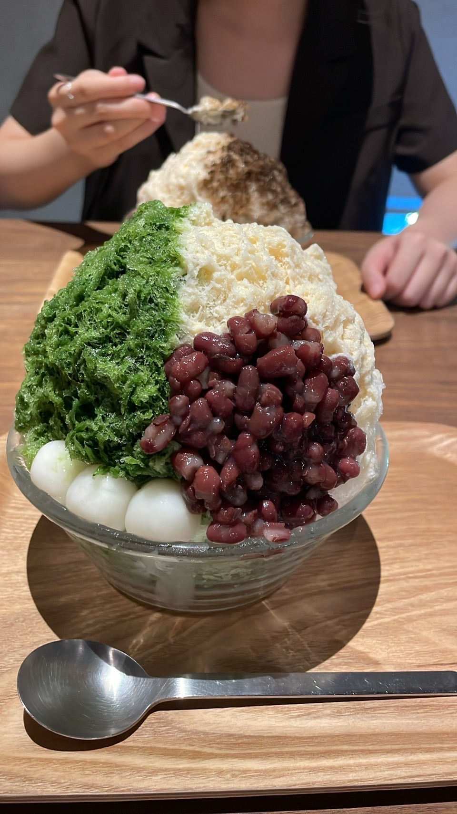
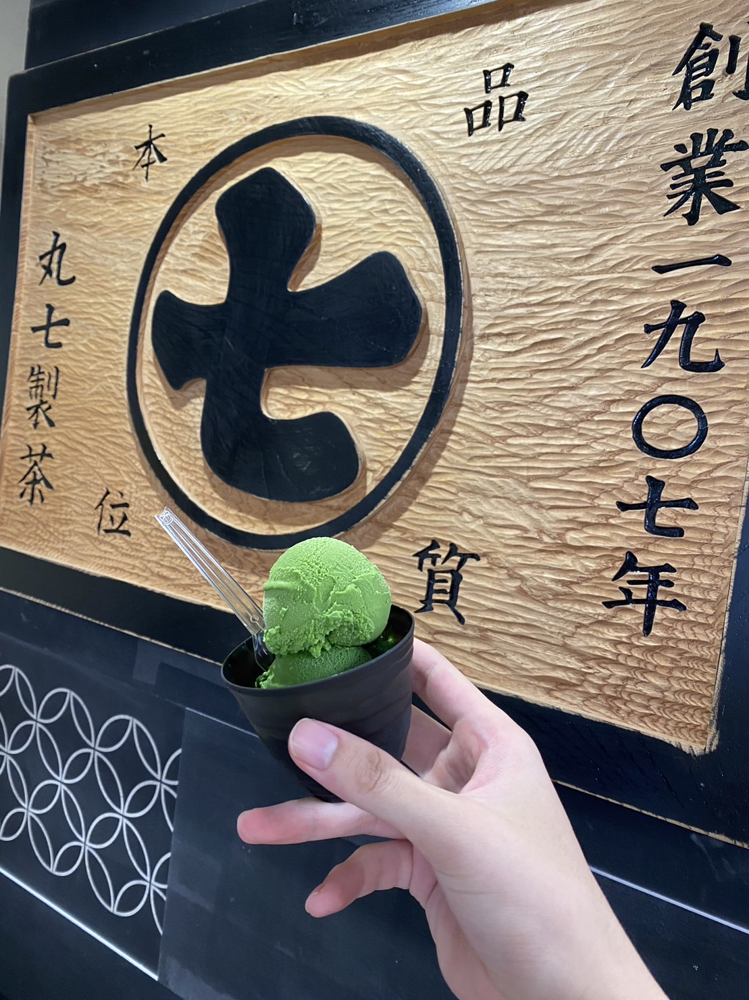
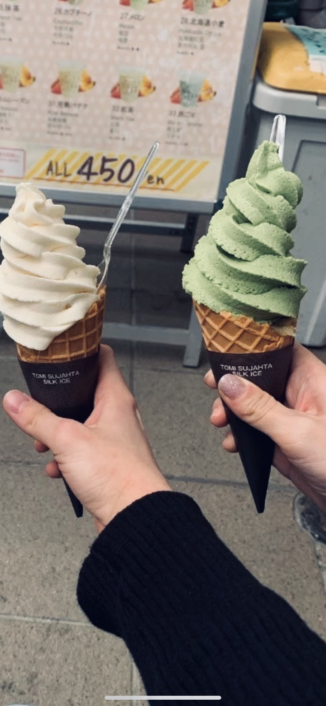

抹茶の冷たい魅力 - 濃厚な抹茶アイス特集 -
贅沢な口どけと香り、抹茶アイスの魅力に包まれる至福のひとときを楽しもう！
1.日本茶カフェ 入口屋
「入口屋」は日本茶カフェで、夏場限定でかき氷を販売しています。中でも写真の「稲荷山 (抹茶ミルク小豆白玉) 」は絶品です！抹茶シロップは甘さ控えめで、ミルクの甘さとマッチしており、小豆も優しい甘さで素材のおいしさを感じれらます。白玉もプリプリで、氷はふわふわなので、頭がキーンとならずに最後まで美味しく頂けます。
暑い夏に涼しいかき氷と落ち着いた店内で素敵なひとときを過ごしてみてはいかがでしょうか？
アクセスマップ
店舗情報
2.ななや 京都三条店
「ななや」は1907年に静岡で創業した「丸七製茶」による世界で一番濃いといわれる抹茶ジェラートで有名なお店です。特に京都三条店では宇治産100%の抹茶を使用した７段階の抹茶の濃さのジェラートが販売されており、抹茶の濃さによって、抹茶のお味や風味、香りの違いを楽しむことができます。
アクセスマップ
店舗情報
3.れこると大須
「れこると大須」は大須商店街にあるかわいいお芋の看板が特徴のお店です。アイスの下には蜜たっぷりの冷たい焼き芋がぎっしり詰まっており、抹茶アイスのほろ苦さと焼き芋の甘さが絶妙にマッチしてとてもおいしいです。他ではお目にかかれない最高の一品をぜひ食べて見てください！